画像をグラフ内に挿入する
Insert-Image
画像がイメージウィンドウ内にあるかOriginの外部にあるかに関係なく、画像をグラフウィンドウに挿入できます。また、Originの外部の画像をコピーしてグラフウィンドウに貼り付けるか、グラフページをOriginの内部の画像としてコピーして他のグラフウィンドウに貼り付けることができます。
画像を挿入
Origin外部の画像ファイルを挿入
- グラフウィンドウをアクティブにします。挿入：ファイルからの画像...を選択します。
- ファイルブラウザから画像ファイルを選択し、アクティブなグラフレイヤに挿入します。png, svg, jpg, tif, bmp, などを含む、複数の画像タイプがサポートされています。
このときデフォルトでは、イメージオブジェクトとして画像は挿入されます。これは後からレイヤ背景に変換することができます。
画像の挿入について知っておくべきこと
- 2021b以前のOriginでは、グラフウィンドウに挿入された画像（レイヤ背景としてではなく）は、形式がBMPとして挿入され、デフォルトで補間が有効になっています。Origin2021bでは、同じ画像が形式をOIMAGEとして挿入されましたが、これは補間をサポートしておらず、まれに画像の品質が低下していました。挿入された画像の劣化が発生した場合は、画像を挿入する前に@IMGB = 1と設定してみてください。補間を確認するには、BMP画像を右クリックし、プロパティを選択し、イメージタブをクリックして、補間を有効にするがオンになっていることを確認します。システム変数の値を設定する方法については、このFAQを参照してください。レイヤ背景として挿入された画像には適用されません。
- プロジェクトファイルのサイズを削減するために、画像ファイルのサイズが800KBより大きい場合（この値はシステム変数@IMLによって決定されています）、デフォルトでグラフへの挿入時には自動的にリンクファイルになります。リンクされている場合、ソース画像ファイルに変更が加え得られると自動で更新されます。小さいサイズの画像をリンクファイルとして手動で設定したい場合には、
- 挿入された画像を右クリックしてリンクファイルを選択します。
- 挿入画像をダブルクリックして別のウィンドウで開き、右クリックしてリンクファイルをクリックして有効にします。
- イメージオブジェクトが外部ファイルとリンクされている場合、オブジェクトを右クリックしてソースファイルのパスを選択することでソースを確認、変更することができます。
イメージオブジェクトとして画像を挿入する場合
- マウスをドラッグすることで、画像のサイズを変更したり（アスペクト比は維持）、画像の位置を変更したりできます。
- イメージオブジェクトは、デフォルトでレイヤフレームに接続されています。
- 画像をダブルクリックすると、イメージウィンドウが開きます。イメージウィンドウでは、画像を関心領域で切り取りまたは切り出ししたり、画像を回転させたりするなど、画像をさらにカスタマイズできます。完了したら、ボタンをクリックしてグラフウィンドウに戻ります。
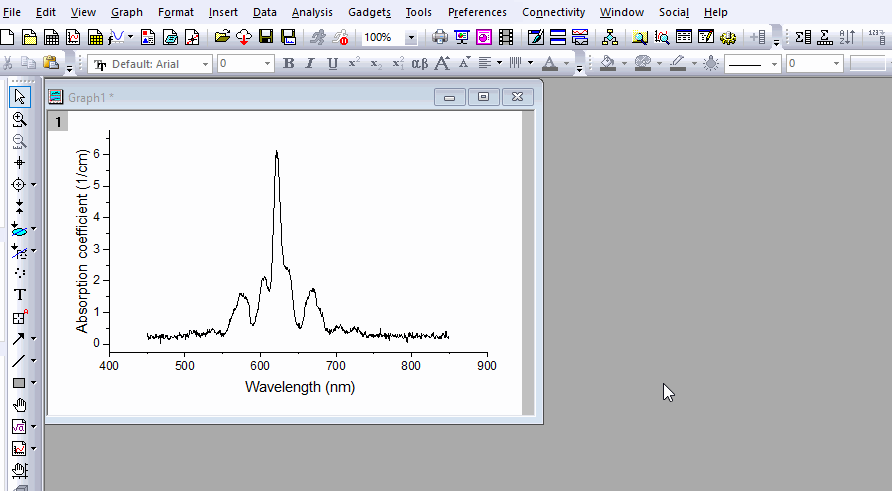
 | 切り取り vs 切り出し
- 切り取りは元の画像を保持しません、
- 切り出しは元の画像を保持するため、後でROIを移動またはサイズ変更して、画像を再度切り抜きできます。グラフウィンドウはそれに応じて更新されます。
- 切り出し後にROIを削除する場合は、イメージウィンドウ内を右クリックし、クリッピングの削除を選択して、グラフウィンドウで画像を全範囲に復元できます。
画像のROIについての詳細は、このページを参照してください。
|
| 別のイメージウィンドウでできることの詳細は、下のセクションを参照してください。
|
SVGの挿入
Scalable Vector Graphics (SVG) は幅広く使われているベクター形式で、Originに導入されて以降、OriginでのSVGの機能を引き続き改良しています。画像の質を悪くせずにOriginのグラフウィンドウ上の自由な場所に配置し、サイズ変更や伸縮、回転を行って画像を挿入したい場合には、SVG形式を使うことを推奨しています。
- 一般的なメニュー挿入：ファイルからの画像...の他に、SVG画像をグラフウィンドウやレイアウトウィンドウにドラッグ＆ドロップして、直接挿入することもできます。
- 画像上でシングルクリックを2回すると回転モードになり、カーソルが円になったら4つのアンカーポイントのうちの1つにカーソルに合わせ、アンカーをドラッグすると画像を自由に回転させることができます。
- 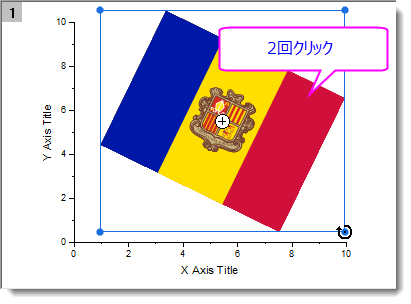
または
- 画像をダブルクリックしてオブジェクトプロパティダイアログを開きます。大きさタブで、角度オプションから角度を入力または選択すると、正確に回転させることができます。
画像をレイヤ背景として挿入する場合
- イメージオブジェクトをダブルクリックすると、イメージウィンドウが開きます。
- イメージウィンドウ内で右クリックし、レイヤ背景として設定を選択します。
- その背景画像はマウスでクリックして選択することはできません。しかし次のいずれかの方法で、別のイメージウィンドウで開くことができます。
- グラフレイヤの縁をシングルクリックします。ミニツールバーが開きます。
- 画像を開くボタンをクリックし、イメージウィンドウで背景画像を開きます。
- 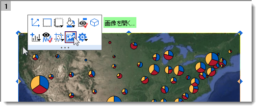
- または
- オブジェクトマネージャを開きます。その内側で右クリックし、コンテキストメニューからグラフオブジェクト表示を選択します。
- レイヤ背景アイコンをダブルクリックし、イメージウィンドウで背景画像を開きます。
- 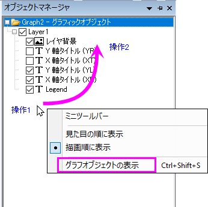
画像が背景かオブジェクトのどちらとして挿入されたのかに関わらず
- 挿入された画像はグラフに埋め込まれます。
- オブジェクトマネージャで画像ノードをダブルクリックして、別のイメージウィンドウで開くことができます。
- イメージウィンドウの内側を右クリックすると、メニューの一覧が表示されます。
- 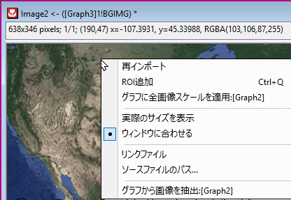
| ROIを追加
|
画像にROIボックスを追加画像のROIで可能なことについて詳しくはこちらのページをご覧ください。
|
| 全ての画像スケールをグラフに適用する
|
画像を背景として挿入する場合にのみ使用できます。イメージウィンドウで設定された座標に従ってグラフを再スケールする
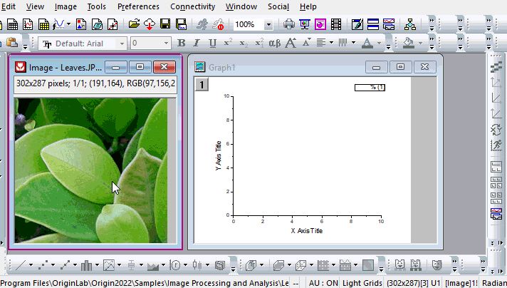
|
実際のサイズを表示/
ウィンドウに合わせる
|
画像を1：1ピクセルで表示する、またはウィンドウのサイズに画像を合わせる
|
| リンクファイル
|
画像をプロジェクトと共に保存するかどうか選択できます。この項目をチェックすると、挿入された画像がOrigin外部のソース画像ファイルにリンクされます。プロジェクト保存時に画像は除外されます。ソース画像ファイルとOriginプロジェクトの間の接続のみを維持します。次回プロジェクトを開いたときに、画像が自動で再読み込みされます。
この機能は、挿入された画像が非常に大きい場合に、プロジェクトのサイズを小さくするのに特に役立ちます。
|
| ソースファイルパス
|
開いているダイアログでソース画像ファイルのパスを確認または変更します。現在のプロジェクトが保存されている場合は、プロジェクトに対する相対パスにチェックを入れ、プロジェクトに対する相対パスを保存できます。
|
| グラフから画像を抽出する
|
埋め込まれた画像を、コンテナとして機能する「実際の」イメージウィンドウとして抽出します。すなわち、画像はイメージウィンドウに保存されるため、プロジェクトと一緒に保存されます。
この機能はプロジェクトのすべてを統合し、他の人と作業内容を共有することをより簡単にします。
|

|
以下は、レイヤ背景として最初に挿入された画像を別のグラフに挿入する方法を示しています。
- 画像の背景があるグラフで、オブジェクトマネージャを右クリックし、グラフオブジェクト表示を選択します。
- レイヤ背景をダブルクリックし、イメージウィンドウで開きます。
- イメージウィンドウ内で右クリックしてグラフから画像を抽出するを選択します。
- 背景のない別のグラフをアクティブにし、挿入：イメージウィンドウからの画像を選択して挿入します。
|
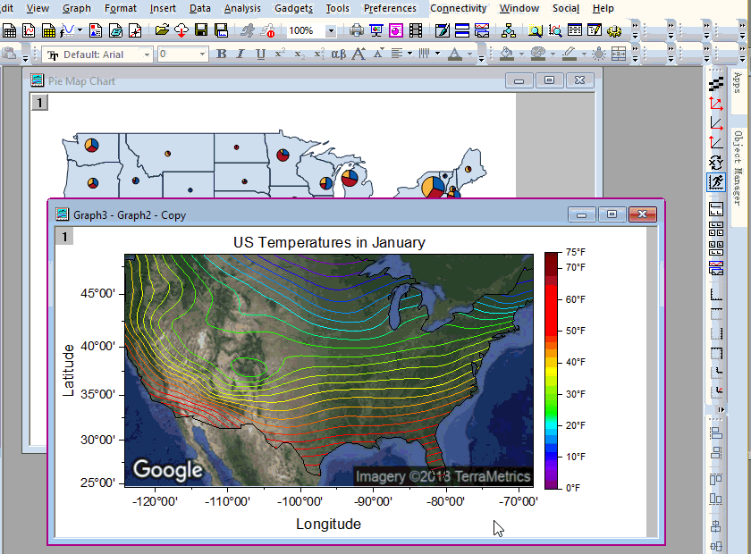
Origin内部の画像を挿入
- グラフウィンドウをアクティブにします。
- 挿入：イメージウィンドウからの画像...を選択します。以下のダイアログが開きます。
- 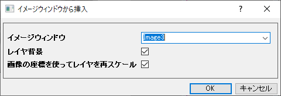
| レイヤ背景
|
- 手動で選択したり移動したりできないレイヤ背景として画像を挿入するには、このチェックボックスにチェックを入れます。この場合、挿入する位置とサイズは画像のXY座標によって決まります。画像のXY座標を設定する方法については、こちらのページを参照してください。
- 画像をグラフオブジェクトとして挿入するには、このチェックボックスのチェックを外します。ドラッグしてオブジェクトの位置やサイズを変更できます。
|
| 画像の座標を使ってレイヤを再スケール
|
画像を背景として挿入する場合にのみ使用できます。挿入された画像のXY座標に従ってグラフのXY軸を再スケールするには、このチェックを入れます。
|
イメージウィンドウから画像を挿入する利点
- 挿入：ファイルからの画像による画像の挿入は、プロジェクトのファイルサイズが劇的に増加します。プロジェクトサイズを削減するには、画像ファイルをOriginのイメージウィンドウにインポートしてからグラフに挿入することをお勧めします。
- イメージウィンドウでは、画像のXY座標を設定し、それを正確な位置のグラフに挿入したり、画像の座標に従ってグラフを再スケールしたりできます。
画像のXY座標を設定する方法については、こちらのページを参照してください。
以下は、画像のXY座標を設定し、それを背景としてグラフに挿入する方法の簡単な例です。
|
|
Googleマップのスクリーンショットがあるとします。それを背景としてバブルプロットに挿入したいと思います。
- 分子画像ファイルをファイル：新規：画像：画像/動画でOriginのイメージウィンドウにインポートします。
- イメージウィンドウをアクティブにして、イメージ：座標を設定...を選択して、画像のXY座標を設定します。
Note：単位はグラフに画像を挿入するときに有効になりません。挿入位置は、XY座標の値によってのみ決定されます。このダイアログで設定された単位は、画像の実際のスケールを決定するために使用され、イメージウィンドウに保存されます。
- グラフウィンドウがアクティブな状態で、挿入：イメージウィンドウからの画像を選択して、指定した座標に従って分子の画像をグラフに挿入します。レイヤ背景チェックボックスにチェックが入っていることを確認します。
|
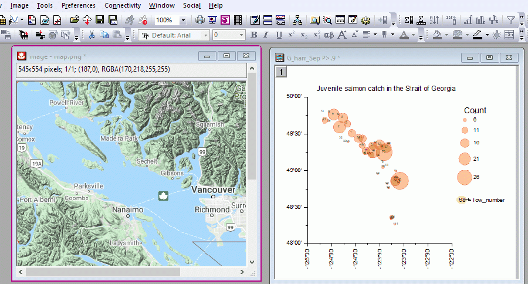
- 画像の座標に合わせてグラフを自動再スケールすることができます。これを行う場合には、レイヤレベルのミニツールバーにある背景画像を自動再スケールボタン
 にチェックを入れます。この機能は、他の画像上のROIボックスから作成されたリンク画像で、ROIを別の場所に移動させる場合に便利です。
にチェックを入れます。この機能は、他の画像上のROIボックスから作成されたリンク画像で、ROIを別の場所に移動させる場合に便利です。
- 画像を背景として挿入する場合、画像にXY座標を設定した後、画像にROIをさらに追加して、グラフの背景をその領域に切り出し、それに応じてグラフの軸を更新できます。
- 挿入：イメージウィンドウからの画像で、背景として画像を挿入します。
- イメージウィンドウをアクティブにします。ROIを追加します。
- ROIの座標を指定します。
- ROIを右クリックし、スケールをグラフに適用する：Graph1を選択します。
- 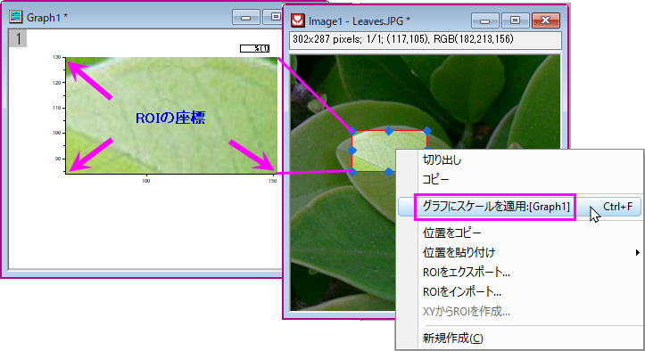
- イメージウィンドウ内を右クリックすると、より多くのオプションが使用できます。
- 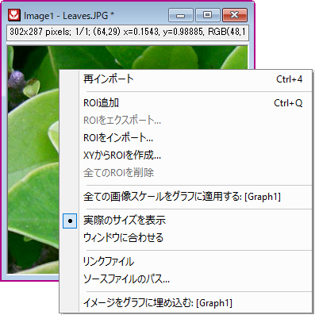
| ROIを追加
|
画像にROIボックスを追加画像のROIで可能なことについて詳しくはこちらのページをご覧ください。
|
| 全ての画像スケールをグラフに適用する
|
画像を背景として挿入する場合にのみ使用できます。イメージウィンドウで設定された座標に従ってグラフを再スケールする
|
実際のサイズを表示/
ウィンドウに合わせる
|
画像を1：1ピクセルで表示する、またはウィンドウのサイズに画像を合わせる
|
| リンクファイル
|
画像をプロジェクトと共に保存するかどうか選択できます。この項目をチェックすると、挿入された画像がOrigin外部のソース画像ファイルにリンクされます。プロジェクト保存時に画像は除外されます。ソース画像ファイルとOriginプロジェクトの間の接続のみを維持します。次回にプロジェクトを開くと、グラフに下向きの矢印が表示されます。これをクリックして画像を再読み込みします。
この機能は、挿入された画像が非常に大きい場合に、プロジェクトのサイズを小さくするのに特に役立ちます。
|
| ソースファイルパス
|
開いているダイアログでソース画像ファイルのパスを確認または変更します。現在のプロジェクトが保存されている場合は、プロジェクトに対する相対パスにチェックを入れ、プロジェクトに対する相対パスを保存できます。
|
| イメージをグラフに埋め込む
|
これにより、画像が埋め込みオブジェクトとしてグラフウィンドウに保存されます。
|
Webから画像を挿入する
- 挿入：Webからの画像を選択
- 詳細は、こちらをご覧下さい
画像をグラフページ内に貼り付ける
- Originから画像をコピーする
もしくは
Originのグラフページを画像としてコピーする
- グラフウィンドウに移動し、空白のスペースを右クリックして貼り付け：貼り付けを選択するか、Ctrl + Vを押すか、メインメニューで編集：貼り付けを選択します。
- 貼り付けた画像をダブルクリックすると、新しいイメージウィンドウで画像が開きます。イメージウィンドウとその編集方法についての詳細は、こちらのページを参照してください。